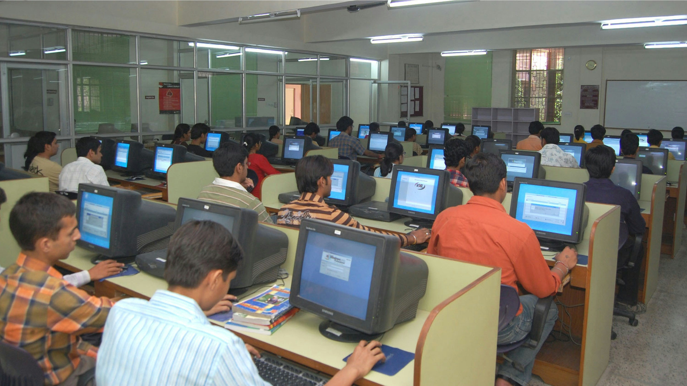

Conheça as iniciativas que mantemos ativas com o apoio de nossos doadores e voluntários.
Programa de Educação Cidadã

Oferecemos reforço escolar e cursos profissionalizantes para jovens de baixa renda.
Curso de Informática Básica
Focado em incluir digitalmente adolescentes e prepará-los para o primeiro emprego.
Caravana da Saúde
Levamos atendimento médico e odontológico gratuito para áreas remotas.
Como se Envolver
Sua participação é fundamental para mantermos nossas portas abertas e expandirmos nosso impacto. Descubra as formas de apoiar a nossa causa.
Trabalho Voluntário
Nossos voluntários são a força motriz da ONG Esperança. Precisamos constantemente de apoio em diversas frentes: seja ministrando aulas, organizando a triagem de mantimentos ou auxiliando na comunicação.
Como participar: Preencha nosso formulário na página de Contato selecionando a opção "Quero ser Voluntário". Entraremos em contato para uma entrevista de alinhamento de perfil e disponibilidade.
Campanhas de Doação
Mantemos Campanhas de Arrecadação Contínuas para financiar a infraestrutura dos nossos programas, como os laboratórios de informática e o transporte da Caravana da Saúde.
Como contribuir financeiramente: Aceitamos transferências bancárias, boletos ou doações instantâneas via PIX (chave: apoie@ongesperanca.org.br). Doações recorrentes nos ajudam a ter previsibilidade financeira.
Doações materiais: Roupas em bom estado e alimentos não perecíveis podem ser entregues presencialmente na nossa sede de segunda a sexta-feira, das 08h às 18h.